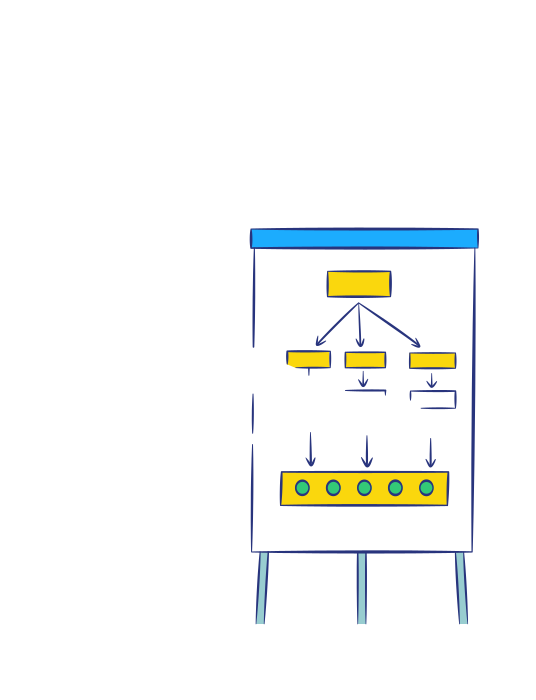
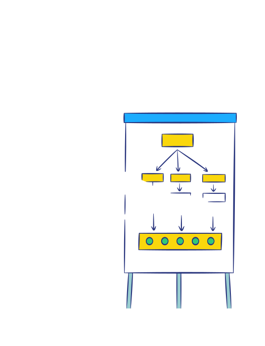

El conocimiento y comprensión de las herramientas para la toma de decisiones, procura garantizar un
ambiente de Confianza y Transparencia, que permita mantener la Estabilidad, Sostenibilidad y la
Integridad del negocio.
Las personas son un componente fundamental para que, a través del empoderamiento y la utilización de
estas herramientas se viabilice la toma de decisiones.
Son las normas acordadas por los accionistas para el funcionamiento de
la Compañía.
Contemplan, entre otros aspectos, las funciones de los órganos sociales, que son la Asamblea General
de Accionistas, la Junta Directiva, El Presidente y Revisores Fiscales.
Integra las reglas de la administración de Ocensa y las mejores
prácticas de Gobierno
Corporativo.
Regula las funciones de los Comités de Junta Directiva.
Es el conjunto de elementos que componen el diseño de la organización, cuyo principal articulador es el esquema de procesos del cual se derivan:
 

Decisor: atribuciones para toma de decisiones sobre asuntos estratégicos, y/o relacionados con el cumplimiento de objetivos y metas de la Compañía. Un Comité tendrá función decisoria, cuando así se haya establecido en el respectivo proceso o en la matriz de delegación.
Asesor: atribuciones para asesorar, recomendar y/o hacer seguimiento, respecto de los temas de su conocimiento.
Alineación: instancia informativa, de coordinación y/o seguimiento en temas estratégicos, técnicos, administrativos, financieros y/o de interés para la Compañía por su relación con el cumplimiento de objetivos y metas del negocio.
Refleja cómo el Representante Legal de la compañía, transfiere funciones a empleados de OCENSA. Éstas funciones están enmarcadas en los macroprocesos organizacionales, así como en las disposiciones descritas por los órganos de la sociedad.
Descargar PDF